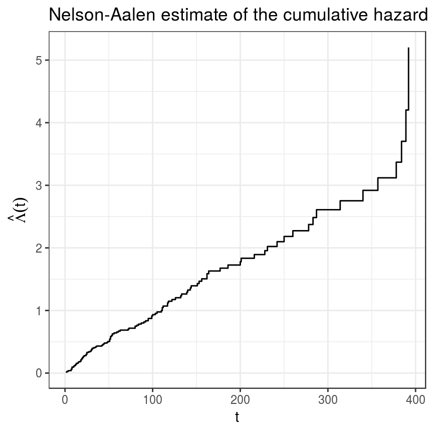
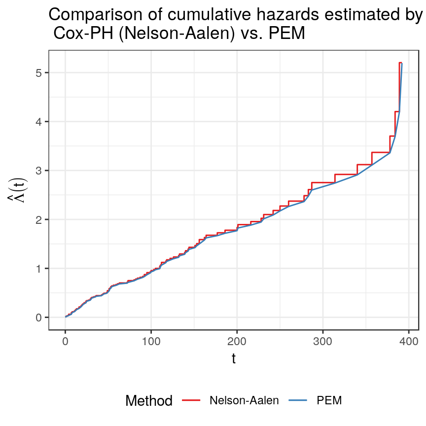
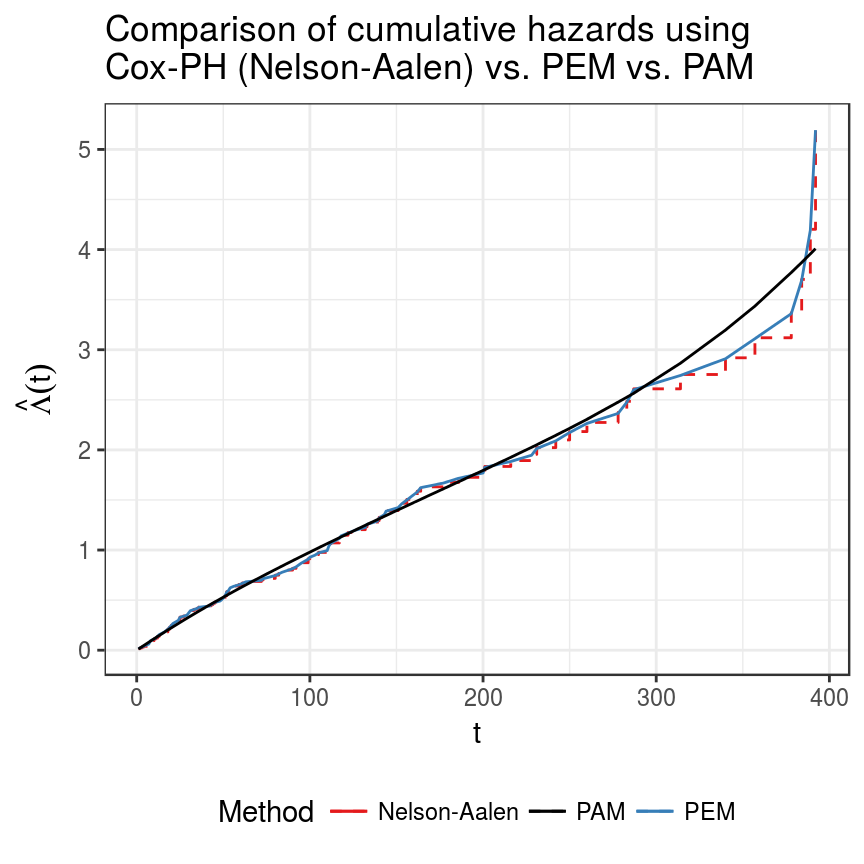

library(ggplot2)
theme_set(theme_bw())
library(dplyr)
library(survival)
library(mgcv)
library(pammtools)
Set1 <- RColorBrewer::brewer.pal(9, "Set1")Here we briefly demonstrate how to fit and visualize a simple baseline model using the pammtools package. We illustrate the procedure using the veteran data from the survival package:
data("veteran", package = "survival")
veteran <- veteran %>%
mutate(
trt = 1 * (trt == 2),
prior = 1 * (prior != 10)) %>%
filter(time < 400)The below graph depicts the estimated cumulative hazard using the Nelson-Aalen estimator:
base_df <- basehaz(coxph(Surv(time, status)~1, data = veteran)) %>%
rename(nelson_aalen = hazard)
ggplot(base_df, aes(x = time, y = nelson_aalen)) +
geom_stephazard() +
ylab(expression(hat(Lambda)(t))) + xlab("t") +
ggtitle("Nelson-Aalen estimate of the cumulative hazard")
First we need to bring the data in a suitable format (see vignette on data transformation).
# Use unique event times as interval break points
ped <- veteran %>% as_ped(Surv(time, status)~., id = "id")
head(ped[, 1:10])## id tstart tend interval offset ped_status trt celltype karno diagtime
## 1 1 0 1 (0,1] 0.000000 0 0 squamous 60 7
## 2 1 1 2 (1,2] 0.000000 0 0 squamous 60 7
## 3 1 2 3 (2,3] 0.000000 0 0 squamous 60 7
## 4 1 3 4 (3,4] 0.000000 0 0 squamous 60 7
## 5 1 4 7 (4,7] 1.098612 0 0 squamous 60 7
## 6 1 7 8 (7,8] 0.000000 0 0 squamous 60 7Extract cumulative baseline estimate:
## tstart tend intlen intmid interval
## 1 0 1 1 0.5 (0,1]
## 2 1 2 1 1.5 (1,2]
## 3 2 3 1 2.5 (2,3]
## 4 3 4 1 3.5 (3,4]
## 5 4 7 3 5.5 (4,7]
## 6 7 8 1 7.5 (7,8]int_df <- int_df %>%
add_cumu_hazard(pem, ci = FALSE) %>%
left_join(base_df, by = c("tend" = "time"))
head(int_df)## tstart tend intlen intmid interval cumu_hazard nelson_aalen
## 1 0 1 1 0.5 (0,1] 0.01526718 0.01532590
## 2 1 2 1 1.5 (1,2] 0.02301911 0.02307783
## 3 2 3 1 2.5 (2,3] 0.03083161 0.03089033
## 4 3 4 1 3.5 (3,4] 0.03870563 0.03876435
## 5 4 7 3 5.5 (4,7] 0.06251515 0.06276537
## 6 7 8 1 7.5 (7,8] 0.09503548 0.09568997Visualize the PEM estimate:
ggplot(int_df, aes(x = tend)) +
geom_stephazard(aes(y = nelson_aalen, col = "Nelson-Aalen")) +
geom_hazard(aes(y = cumu_hazard, col = "PEM")) +
scale_color_manual(name = "Method", values = c(Set1[1:2])) +
theme(legend.position = "bottom") +
ylab(expression(hat(Lambda)(t))) + xlab("t") +
ggtitle("Comparison of cumulative hazards estimated by \n Cox-PH (Nelson-Aalen) vs. PEM")
## [1] "Mean relative difference: 0.004259304"Alternatively, we could use PAMs. This means estimating the baseline log-hazard rate semi-parametrically as a smooth, non-linear function evaluated at the end-points tend of the intervals defined for our model.
Note that the estimated log-hazard value at time-points tend gives the value of the log-hazard rate for the entire previous interval as PAMs estimate hazard rates that are constant in each interval - that’s where the piece-wise in the name of the method comes from.
Estimating the log hazard rate as a smooth function evaluated at tend - instead of using an unpenalized estimator without such a smoothness assumption - ensures that the hazard rate does not change too rapidly from interval to interval unless there is sufficient evidence for such changes in the data.
##
## Family: poisson
## Link function: log
##
## Formula:
## ped_status ~ s(tend)
##
## Parametric coefficients:
## Estimate Std. Error z value Pr(>|z|)
## (Intercept) -4.60870 0.09907 -46.52 <2e-16 ***
## ---
## Signif. codes: 0 '***' 0.001 '**' 0.01 '*' 0.05 '.' 0.1 ' ' 1
##
## Approximate significance of smooth terms:
## edf Ref.df Chi.sq p-value
## s(tend) 2.143 2.666 3.07 0.278
##
## R-sq.(adj) = -0.00102 Deviance explained = 0.521%
## UBRE = -0.82721 Scale est. = 1 n = 5392In the figure below we compare the previous baseline estimates with the PAM estimates.
Expand here for R-Code
# add PAM predictions to previous data
int_df$pamhaz <- predict(pam, newdata = int_df, type = "response")
int_df <- int_df %>% mutate(pamch = cumsum(pamhaz * intlen))
gg_baseline <- ggplot(int_df, aes(x = tend)) +
# geom_ribbon(aes(ymin=cumu_lower, ymax=cumu_upper), alpha=0.2) +
geom_stephazard(aes(y = nelson_aalen, col = "Nelson-Aalen")) +
geom_line(aes(y = cumu_hazard, col = "PEM")) +
geom_line(aes(y = pamch, col = "PAM")) +
scale_color_manual(
name = "Method",
values = c("PEM" = Set1[2], "PAM" = 1, "Nelson-Aalen" = Set1[1])) +
theme(legend.position = "bottom") +
ylab(expression(hat(Lambda)(t))) + xlab("t") +
ggtitle(paste0("Comparison of cumulative hazards estimated by\n",
"Cox-PH (Nelson-Aalen) vs. PEM vs. PAM")) All models are in good agreement.